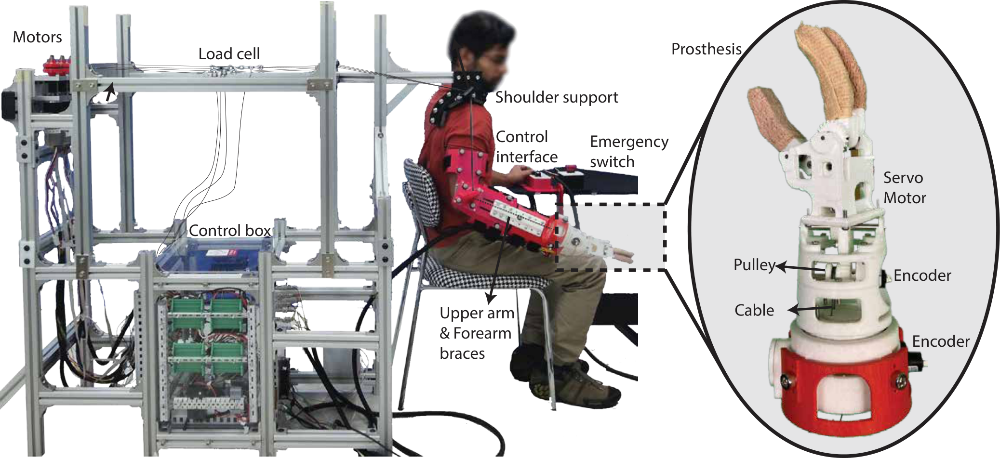

ProstheticsCable-driven designHuman testing

Robotic Prosthesis Emulator for User-Driven Design of Multi-DOF Transradial Prostheses
Affiliation: University at Buffalo, USA
Designed and evaluated a lightweight cable-driven transradial prosthesis emulator for systematic testing of wrist configurations during daily living tasks.
Read project →